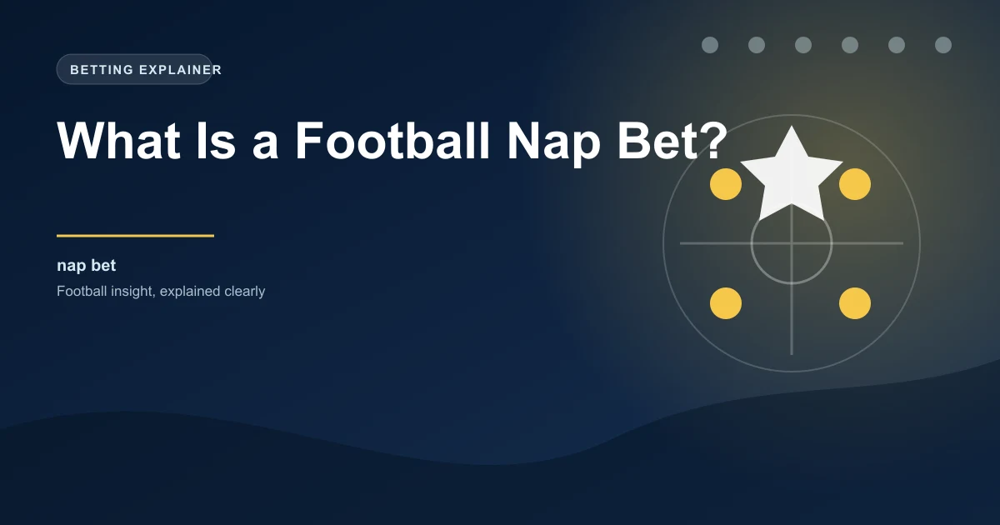

In the world of football tipping, the nap bet holds a special place. It is the selection that a tipster or punter considers their strongest bet of the day. Not the safest, not the shortest odds, but the one they are most confident about given the available evidence. When a respected tipster puts up their nap, it carries weight because it represents the culmination of their daily analysis distilled into a single pick.
Understanding what a nap bet is and how to identify your own nap selections can sharpen your betting approach and help you focus on quality over quantity.
The term "nap" comes from the card game Napoleon, where a player declared their confidence in winning a hand. Over time, the word became associated with the strongest selection in any betting context, particularly in horse racing before it crossed over into football. Today, the nap is universally understood among UK and European bettors as the tipster's best bet of the day.
When a newspaper tipster or online personality announces their nap, they are saying: "Of all the selections I am making today, this is the one I believe in the most." It is not necessarily the selection with the highest expected return or the shortest odds. It is the one where the tipster's analysis points most clearly toward a profitable outcome.
The nap and the banker are often confused, but they serve different purposes in your betting strategy.
| Feature | Nap Bet | Banker Bet |
|---|---|---|
| Definition | Strongest pick of the day | Most reliable leg in an accumulator |
| Odds range | Can be any price (1.50 to 5.00+) | Usually short-priced (1.10 to 1.80) |
| Purpose | Standalone single bet | Anchor for an accumulator |
| Basis | Best value identified through analysis | Highest probability selection |
| Staking | Typically larger single stake | Part of a combined stake |
The key difference is that a nap is about conviction in the value of a single selection, while a banker is about reducing risk in a multiple bet. You might nap a team at 3.50 odds because you believe the market has undervalued them. You would never banker that same selection because the odds are too high for a conservative accumulator leg.
Experienced tipsters follow a structured process when selecting their nap. It is rarely a gut feeling. The best naps emerge from a combination of research, analysis, and market awareness.
A tipster might identify five or six strong selections on a given day, but only one will be their nap. The process of elimination is just as important as the initial research. The nap is the selection that survives every challenge you throw at it.
You do not need to follow someone else's nap to benefit from the concept. Building the discipline to identify your own nap selection each day can dramatically improve the quality of your betting.
Track every nap selection you make, including the odds, stake, outcome, and your reasoning. After 100 naps, you will have a clear picture of which types of selections perform best for you. Some bettors find their naps work better in specific markets (over/under goals, for example) or at specific odds ranges. This data helps you refine your selection process over time.
Because the nap represents your strongest conviction, it typically receives a larger stake than your other selections. However, the size of that stake should still be governed by your overall bankroll management plan.
A common approach is to stake your nap at 2-3 times your standard unit size. If your normal bet is 1 unit, your nap might be 2-3 units. This ensures the nap has a meaningful impact on your daily results when it wins, while still protecting you from excessive losses when it loses.
High conviction does not mean guaranteed success. Even the best tipsters see their naps lose regularly. A 60% strike rate on naps at average odds of 2.00 is excellent long-term, but it still means 4 out of every 10 naps will lose. Never stake more than you can afford to lose, regardless of how confident you feel about your nap.
The nap should be the centrepiece of your daily betting activity, but it should not be your only bet. Most experienced bettors build their day around the nap, adding supplementary selections that complement it.
For example, if your nap is over 2.5 goals in a specific match, you might add related selections that support your thesis. Perhaps both teams to score in the same match, or over 1.5 first-half goals. These supporting bets reinforce your nap analysis without duplicating the risk.
The opposite approach also works. If your nap is a team to win, you might add a selection in a completely different match to diversify your exposure. The nap anchors your day, and the other bets provide additional opportunities across the schedule.
Following other tipsters' naps can be useful, especially when you are building your own analytical skills. However, blindly following naps without understanding the reasoning behind them is a recipe for frustration. A nap that loses might have been perfectly justified by the analysis, and the next nap from the same tipster might be equally strong. Judging a tipster's naps over a sample of at least 50-100 selections gives a much clearer picture than reacting to individual wins or losses.
The most effective approach is to use other tipsters' naps as a starting point for your own research. If a respected tipster naps a selection, it is worth investigating why. Their reasoning might highlight something you missed, and that additional insight might strengthen your own conviction or lead you to a different, better selection in the same match.
Use our 1X2 predictions to inform your nap selection with AI-powered analysis across today's fixtures.
 Win
Win